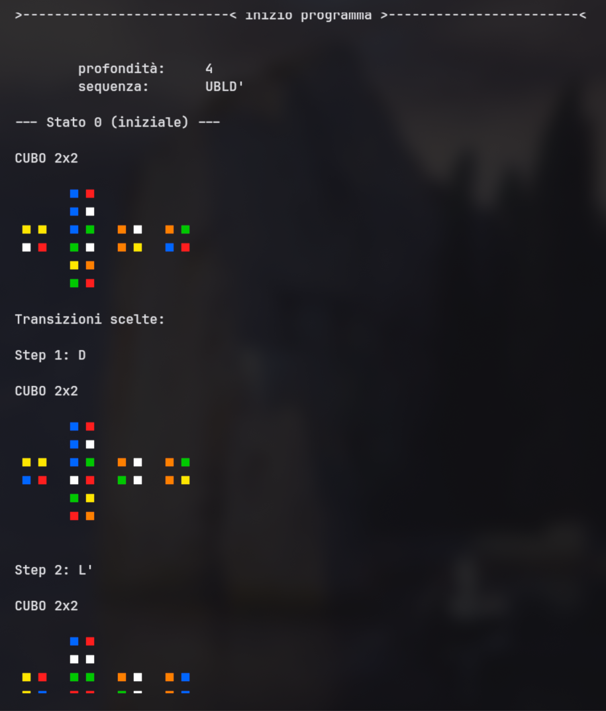
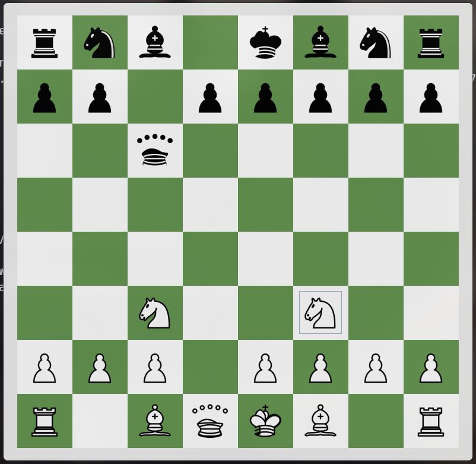

Data Scientist | Software Developer
I am Filippo Morello, a Data Science student (Foundations of Artificial Intelligence and Machine Learning) at the University of Trieste. I am passionate about both low-level and high-level software development, operating system architecture, and data analysis.
I write code in C (managing memory and parallelization), Java, Python (for data analysis using pandas and optimization with NumPy), R (also for data analysis), MATLAB (for solving non-linear functions via numerical methods), and SQL (for database queries). My primary development environment is Linux on GNU/Linux operating systems such as Arch Linux and Ubuntu (Debian). I have customized my Arch Linux setup to create a minimal environment using tools like Hyprland and i3, alongside Yazi, Kitty, Starship, and other software.
Beyond software development, I also dedicate my time to other interests such as sports, cinema, and art.
Overview of the main exams of the Bachelor's degree program:
Computer Science and Software Development:
Introduzione alla Programmazione, Computabilità Complessità e Logica, Software Development Methods, Basi di Dati, Algoritmi e Strutture Dati, Architetture degli Elaboratori e OS, Reti di Calcolatori e Cybersecurity.
Artificial Intelligence and Data Analysis:
Introduzione all'AI, Metodi e Modelli Matematici per l'AI, Data Analytics, Aspetti Etici, Sociali e Legali dell'Intelligenza Artificiale, Machine Learning.
Mathematics, Statistics and Physics:
Algebra Lineare ed Elementi di Geometria, Analisi Matematica I e II, Inferenza Statistica, Algoritmi di Ottimizzazione, Calcolo delle Probabilità, Analisi Numerica, Introduzione alla Fisica, Sistemi Complessi, Teoria dell'informazione.


Use and integration of the Z3 theorem prover for logic modeling, analysis, and resolution of complex constraint satisfaction problems (CSP).
View Repository →
Experimentation and development of TensorForth in C, replicating the behavior of the Forth language. Use of parallelization with OpenMP and vectorization using vector registers with C Intrinsics.
View Repository →
Design and development of a chess engine with a Swing graphical interface. Implementation of the artificial intelligence decision-making logic using the Minimax algorithm with Alpha-Beta pruning, plus a solid structure of automated test suites via JUnit 5. Use of Git versioning, CI, and GitHub Actions.
View Repository →
Customization of the development environment on Arch Linux, integrating a dedicated repository for dotfiles, Zsh scripts, and Makefiles to automate the installation and configuration of a new environment based on tiling window managers (Hyprland, i3) and terminal tools (Waybar, Yazi, Kitty, Neovim).
View Repository →
Mobile application (Vibe Coded) for background media streaming. Built with Jetpack Compose for a modern and fluid interface, utilizing Media3 ExoPlayer and NewPipeExtractor for managing and playing playlists and audio/video content.
View Repository →
Upcoming Roadmap: I am focusing on the development of new architectures for custom neural networks and delving into the Rust ecosystem to create a minimal Wayland-based window manager. Additionally, I am designing a 3D rendering engine written in C to explore the low-level graphics pipeline.
Cinema and Literature: I prefer science fiction and thriller works focused on philosophical themes and existential questions.
Chess: A player since childhood, I study theory, tactics, and openings such as the Queen's Gambit, Sicilian Defense, King's Indian Defense, and Caro-Kann.
Sports and Outdoors: I maintain strict physical discipline through swimming, running, and long-distance trekking.
Art and Drawing: I create portraits and studies of the human figure using pencils and ink pens.